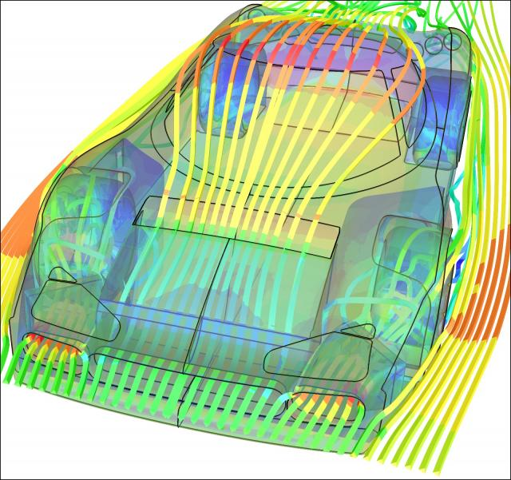

The latest release of Caedium (v2.2) can now perform Computational Fluid Dynamics (CFD) simulations in parallel on a single computer with multiple cores or on a cluster running Microsoft Windows HPC Server 2008 - either way it means a significant reduction in simulation turnaround time compared to previous versions of Caedium. Also available with this release are 64-bit versions of Caedium for Windows and Linux, which can perform much larger simulations since they are no longer restricted by the 32-bit memory limit.
Parallel Caedium CFD Simulation of a Racecar: 5 million cellsMesh courtesy of Advantage CFD